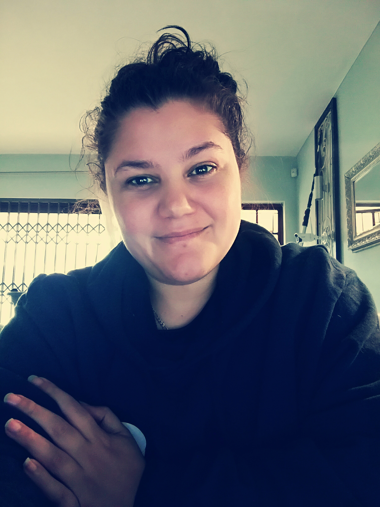

Celestine Green

Summary
I have always loved the creative side of my previous job. I was an Online
Visual Merchandiser for eight years. I was self-taught in HMTL until I did
a few Udemy Courses to sharpen my skills and broaden my knowledge. So,
when it came to making sure everything looked amazing and in place on the
website just by customizing the backend has always been my happy place.
Knowing that 100s of people see your work and admire it drives me to try
new and exciting challenges.
Education
-
Certificate, Graphics Design
Year 2019 - University of Cape Town, Cape Town South Africa
-
Diploma, Personal Trainer
Year 2002 - ETA College, Durban, South Africa
-
Matric Certifical
Year 2001 - Pinetown Girl's High School
Work Experience
-
Visual Merchandising Manager
Apr 2014 to Dec 2022
- Successfully handled visual merchandising, and worked to promote company vision
- Helped to achieve a consistent look and visual theme across the website by promoting uniform fonts, formatting, images, and layout.
- A great understanding of HTML for the use of, e.g. blog creation or customer guides to help give the customer a better online shopping experience.
- Adept knowledge of Shopify back-end such as theme layout and navigation to product listing, as well as, the customers journey throughout the website.
- Worked in injunction with the Marketing department to ensure cohesion throughout the promotional campaign both online and print.
Quality Controller
Nov 2010 to Nov 2012
- Inspected, tested and measured materials for conformance to specification and regulatory requirements.
- Complete daily inspections rounds covering all facility equipment and machinery.
- Oversaw the disposal of products, materials and equipment not in compliance with tolerance, safety standards or quality levels.
- Identified production concerns and worked with supervisors to understand and remedy situations.
- Compared product and material colour, shape, texture and grades with predetermined template.
Mixer Operator
Oct 2005 to Oct 2010
- Safely and knowledgeably operated equipment such as tanks, mixers, scales, metres and pumps
- Monitored mixing processes on 2-4 machines, ensuring operations stayed safe, accurate and in line with SOPs.
- Located and moved stock throughout warehouses using forklifts, pallets and crates when required by supervisors.
- Kept in line with safety regulations throughout forklift operating tasks by wearing hard hats, high viz and other PPE
- Cleaned equipment, tanks and vessels, keeping tools clean and in good working order
- Communicated clearly with other operatives to ensure high-performing production-line output.
Fitness Consultant
2002 - 2004
- Guided clients in safe and effective exercise practices.
- Lead group fitness classes, as well as one-on-one training sessions.
- Maintained a clean and organised fitness area.
- Help new members understand equipment and safe use of the facilities.
- Advised clients about proper nutrition and dieting.
- Aimed to create a comfortable and welcoming environment for clients.
- Understanding individual needs and requirements to reach the desired fitness goals.
- Adapt workouts to ensure safe outcomes for all physical needs.
Skills
- Online Merchandiser ⭐️⭐️⭐️⭐️⭐️
- Inventory Management ⭐️⭐️⭐️⭐️⭐️
- Content Creation ⭐️⭐️⭐️⭐️⭐️
- Dispatch Operations ⭐️⭐️⭐️⭐️⭐️
- HTML & CSS ⭐️⭐️⭐️⭐️
- Adobe Creative Suite ⭐️⭐️⭐️⭐️
- Graphic Design ⭐️⭐️⭐️⭐️
Certifications
- Graphic Design Certificate of Knowledgement
Other